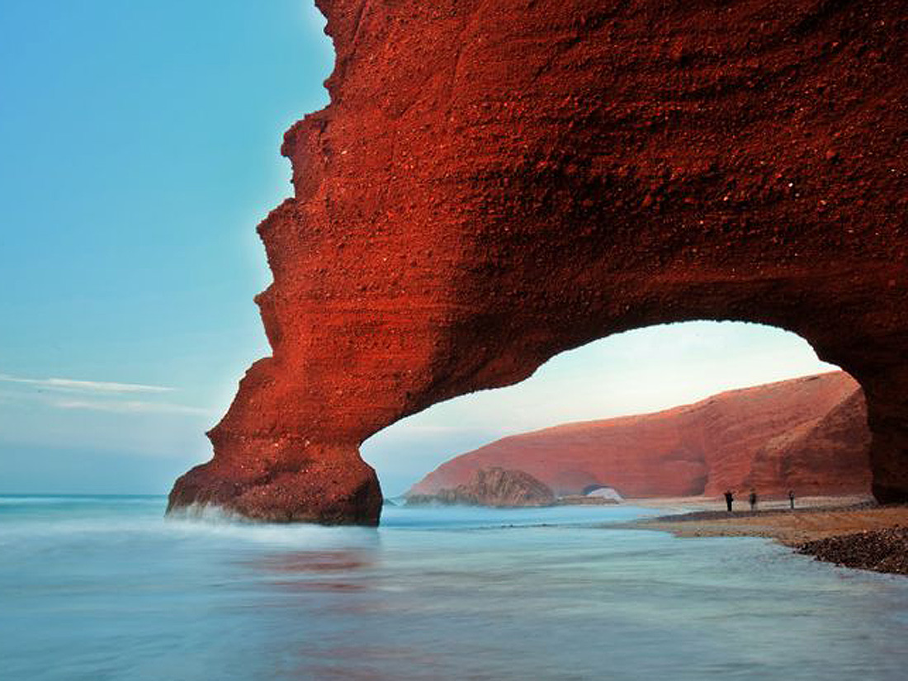

Maroc
Découverte du Maroc
Géographie et paysage
Le Maroc est un pays situé à l'extrême nord-ouest de l'Afrique, baigné par l'océan Atlantique à l'ouest et la mer Méditerranée au nord. Il est connu pour sa diversité géographique, allant des montagnes de l'Atlas aux vastes plaines côtières et aux dunes du Sahara.
Culture et patrimoine
Le Maroc possède un patrimoine culturel fascinant, marqué par des influences berbères, arabes et européennes. Les grandes villes marocaines, telles que Marrakech, Fès, Rabat et Casablanca, témoignent de l'histoire riche et variée du pays.

Gastronomie
Le Maroc est réputé pour sa gastronomie savoureuse, qui mélange des épices, des herbes et des ingrédients frais. Des plats emblématiques tels que le tajine, le couscous et le pastilla illustrent la richesse de la cuisine marocaine.

Paysages impressionnants
Les montagnes de l'Atlas, avec leurs sommets enneigés, attirent les amateurs de randonnée et d'aventure, tandis que le Sahara, avec ses dunes dorées, propose des expériences inoubliables de désert.